When you test your programs, there are really three kinds of techniques you can use to, locate and correct the defects in your code.
- Assertions and exceptions can be place placed inside your code to make a method's preconditions and postconditions explicit. If a method takes a parameter and it assumes that the parameter always contains the values 1, 2, 3, or 4, you'd check the parameter value before it was used, and throw an exception if it was incorrect. Exceptions and assertions are used to expose errors made when calling methods, not when defining them.
- Tracing or logging is used when errors occur during program runtime, but you don't want to interrupt the program like you would with an exception. Instead a log file is created that can later be examined to track down errors.
- Finally, debugging is the interactive examination of your program. You learned how to debug your code using the DrJava debugger in Section 5.6—Debugging, earlier in the semester.
While assertions, logging and debugging are all important
techniques, here I want to look at the single most
important testing tool at your disposal: the unit test.
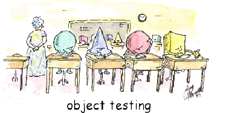
Unit testing isn't anything new for you, of course. From the very beginning of the course, your homework assignments and exams have been graded using the Check program and the unit tests that I've written. In this section you'll learn how to write unit tests using DrJava,
and the JUnit testing framework. Rather than hand-crafted unit tests,
you'll learn how to write your unit tests by calling the methods in
the JUnit TestCase class.
Testing: the Big Ideas
Testing and debugging are really two sides of the same coin; both are designed to ensure that your program runs correctly. Testing is designed to expose errors, while debugging is used to locate and fix the errors that are discovered through testing. Of course once you've fixed an error, you need to make sure you test it to show that it does what you expect.
 One person who has been very influential in the area of
testing is Edsger Dijstra, the Dutch professor famous for his
ACM "Goto considered harmful" paper that's often credited with
sparking the structured programming revolution in the sixties
and seventies.
One person who has been very influential in the area of
testing is Edsger Dijstra, the Dutch professor famous for his
ACM "Goto considered harmful" paper that's often credited with
sparking the structured programming revolution in the sixties
and seventies.
Dijkstra is responsible for two really big ideas when it comes to testing:
- testing does not prove that your program is correct.
- exhaustive testing is impossible.
Testing and Correctness
First is the idea that testing can never prove that your program is correct. Thorough testing can show the presence of bugs, but it can never prove that all the bugs in your code have been found.
Dijkstra was a proponent of software verification and the discipline known as formal methods; he wanted to make a very clear distinction between verified code—that is, code that is mathematically proven to be correct—and code that was merely well tested.
In fact, though, the promise of formal verification has not proved to be as useful as Dijkstra first hoped, both because of the difficulty and the cost.
Exhaustive Testing
Of course, if you could test every possible input value, then maybe you could prove that your code has no bugs. Dijkstra anticipated this objection as well, and proved that such exhaustive testing was physically impossible.
Here's a short quote from his original 1969 paper, Notes on Structure Programming, which dealt with the microcode contained in a CPU:
Let us restrict, for a moment, our attention to the hardware
and let us wonder to what extent one can convince oneself of
its being properly constructed. Some years ago a machine
was installed on the premises of my University; in its
documentation it was stated that it contained, among many
other things, circuitry for the fixed-point multiplication of two
27-bit integers. A legitimate question seems to be: "Is this
multiplier correct, is it performing according to the
specifications?".
The naive answer to this is: "Well, the number of different
multiplications this multiplier is claimed to perform correctly is
finite, viz. 254, so let us try them all." But, reasonable as this
answer may seem, it is not, for although a single
multiplication took only some tens of microseconds, the total
time needed for this finite set of multiplications would add up
to more than 10,000 years! We must conclude that
exhaustive testing, even of a single component such as a
multiplier, is entirely out of the question.
Today, you might write a function that takes two 32-bit ints. Using Djikstra's calculations, if you could test a million calculations a second, then testing all possible combinations of those two 32-bit ints would take you 585,000 years.
What Are Unit Tests?
Testing involves not only carefully deciding what values to feed into your program, but also, for every input value, knowing exactly what the expected output should be. Simply calling a method is not the same as testing the method.
To test a method, call it and then compare it's expected output with its actual output.
Of course, for that to work, you have to know the expected output ahead of time. Not only that, but you have to be able to examine the results and easily see when the expected and actual outputs differ. For that, you'll use a test harness.
The Test Harness
A test harness is a program that is designed to feed
arguments to your class or methods and then, to evaluate the
correctness of the results. This simplest kind of test harness
is a "hand-rolled" test program, similar to the
PongBallTest program shown here.
 A hand-rolled test program like this 1) creates an instance of the class
you are testing, and then 2) calls each of the methods in the class.
Each time a method is called, 3) the test program
prints out the expected and actual values of
the object's instance variables.
A hand-rolled test program like this 1) creates an instance of the class
you are testing, and then 2) calls each of the methods in the class.
Each time a method is called, 3) the test program
prints out the expected and actual values of
the object's instance variables.
Hand-rolled tests are fine, but the real problem comes with
evaluating the results. With the
PongBallTest program, for instance, you might not
notice if the actual values for x and
y were different from the expected
values because there was so much output.
Carefully examining each line of output in a test program is very, very time consuming. That's where automated unit tests are much more efficient. Automated unit testing programs are an entire category of software. The most popular is the JUnit family of programs.
The most recent version of JUnit is version 4. DrJava includes JUnit 4 built in, but creates test programs that run with either JUnit 4 or with the older JUnit version 3. The DrJava wizard creates JUnit 3 style test programs, so that's what I'll show you here.
Testing the Calculator Class
We're going to start our examination of JUnit by writing some tests for a class named Calculator.java, which was originally written by Stephen Edwards at Virginia Tech. You'll find the program in this chapter's code folder. Go ahead and open it in the DrJava editor and add your own author and version tags to the header.
Before we get to testing, let's spend a few minutes looking through the source code of the Calculator class.
- The class has a single field (
value) which acts as the accumulator for the calculator:
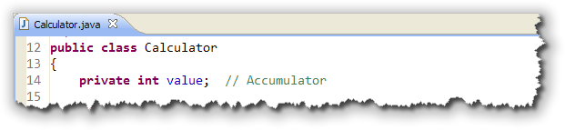
- The constructor initializes the accumulator to zero (although that's
really not necessary of course):
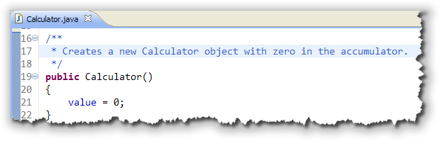
- There are methods to get, set and clear the
accumulator, as well as the normal four functions that you'd
expect in a calculator: add, subtract, multiply and divide:

Each of the arithmetic operations puts its result back into the accumulator and uses the accumulator as its left-hand operand.
Creating the Test Case
With JUnit 3, you put your unit tests inside a TestCase class
that can include a number of tests. To get you started,
DrJava has a rudimentary wizard that you can
run by choosing New->JUnit Test Case from the File
menu, like this:
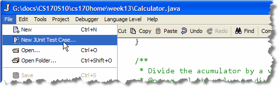
All you need to do is supply a name for your test program. As I By convention, you use the name of the class you are testing, (Calculator in our case), along with the word "Test".
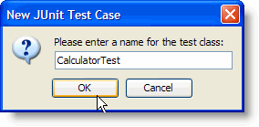
So we'll name our test program CalculatorTest. When you click OK, DrJava will generate a new CalculatorTest
class in the Definitions Pane. You should immediately save the
file in your current folder (instead of leaving it "untitled").
The skeleton that DrJava writes for you is very simple. It consists of
a class that extends junit.framework.TestCase and a single,
empty, test method. You'll add more test methods for each feature you
want to test:
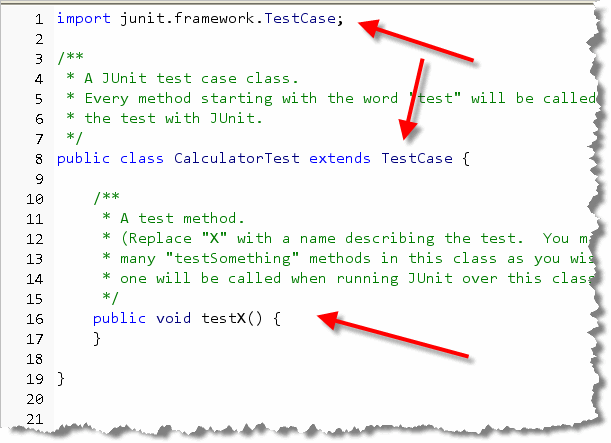
Run the Tests
To run the test, first make sure that CalculatorTest.java
is the selected file in the Definitions Pane, and then right-click
and choose Test File from the context menu:
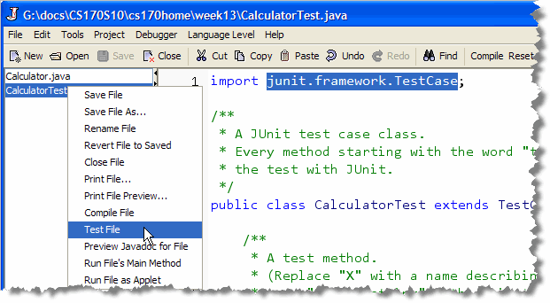
Alternatively you can: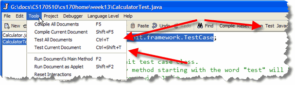
- Choose Test Current Document from the Tools menu, (or press Control+Shift+T to do the same thing).
- Choose Test All Documents from the Tools menu, which runs all open JUnit Test Case classes open in the Files pane. Pressing Control+T, or clicking the Test toolbar button does the same thing. (Actually, this semester I've replaced the Test toolbar button with the Check button, so you can't use that method to run your tests.)
When you run a test program, the output appears in the JUnit tab
at the bottom of the screen. Since the test contained in the
DrJava starter program is empty, it automatically passes, and
this is what you see:
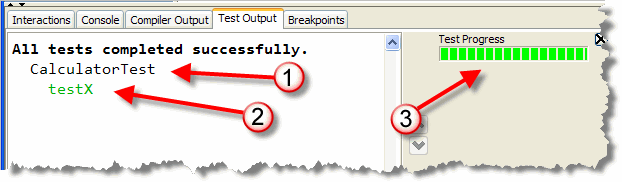
- As each JUnit Test Case program is run, you'll
see a message printed about that class, (at #1). Since we
have only one TestCase program, it prints out the name:
CalculatorTest. - Each passing test has its name displayed
(at #2). The generated test method is called
testXand since it was empty, it automatically "passed". Normally we'll use more descriptive test names. - Finally, to the right, you'll see what I call a "scoreboard" that contains a bar that will contain green and red segments: red for failures and green for successes. In our case the only test passes, so it's solid green.
By convention, test method names begin with the prefix "test"; this is required in JUnit 3, and we'll follow this convention.
Writing Test Methods
To test your class,
you'll write at least one separate test
method for each operation, following the same syntax as
the testX() method supplied by DrJava. (That is,
your methods won't take parameters, they'll be public
with a void return type, and they'll start with the
word "test").
Inside each test method you will normally:
- create an object of the class you are testing, and make
sure that it is placed in a known state. In our case
we'll create a
Calculatorobject, with the accumulator set to 0. - Then, you'll call the different mutator methods that you are testing. Each test method should generally make only one change to the object.
- Finally, after calling the mutator, you'll call an accessor method and compare the expected value with the actual value returned by the accessor.
Let's try a simple example. Let's check to see if the Calculator
class constructor really does set the accumulator to 0, like it
is supposed to. To do that, convert the dummy testX() starter
code into a method named testConstructor() using the
code shown here:
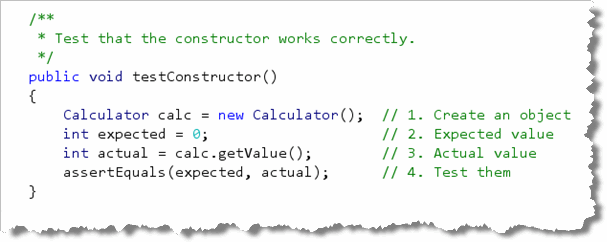
Once that's done, save the test program and run your tests again. Note how this method:- Creates a
Calculatorobject - Manually calculates the expected value of the accumulator
when you construct a
Calculator. - Compares the expected value (0) with the actual value
returned by calling
getValue()
This last step is done by using a special JUnit assertion. Let's go ahead and look at that now.
JUnit Assertions
JUnit assertions do not use the assert keyword, which you
learned about earlier in this chapter. When you use the assert
keyword, you place it inside your normal source code, and, if the assertion
fails, the program is terminated.
Instead, JUnit assertions are special methods
that JUnit uses to compare actual and expected values inside a
JUnit test program (not inside your regular source code). When you
run the JUnit Test Case class, your program does not stop when a test is
failed. Instead, all of the tests are run, and the results are
displayed in the special JUnit window.
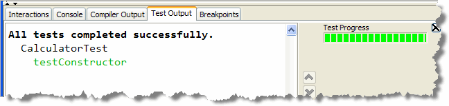
Of course, since your test still passes, the output doesn't look much different than before, except the name of the method is a little more informative. The JUnit assertion method that you'll use most
often is named assertEquals(). When you use
assertEquals(), the first parameter is the value you expect
and the second parameter is the actual value produced by calling one of
your object's accessors.
Failed Assertions
Now that you know what both a passed test looks like, let's
see a failed test. Go ahead and add another test method
named testSetValue() which will be used to make
sure that the setValue() method works correctly:
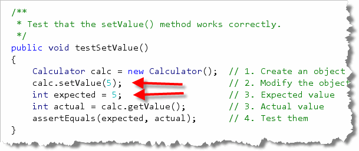
As you can see, the general format of the test was copied directly fromtestConstructor(). Besides the change in name
is that testSetValue() also calls a mutator method
and then checks to see that the Calculator object was
modified appropriately.
Now, change the expected value to 4 (even though it really
should be 5). Since the actual value will be
5, not 4, the test will fail.
Re-run the tests, and this time, examine the Failure Trace
area immediately below the list of tests that were run:
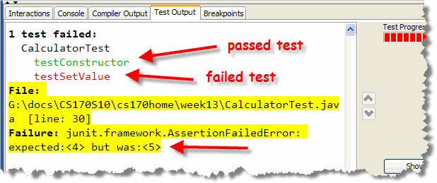
Notice how the message points out the actual and expected values.Other Assertion Methods
If you want to supply a hint or other information about what
the test is doing (to help in debugging, you can use a
three-parameter version of assertEquals() like
this:
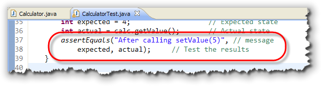
The first parameter is an error message that you want to have displayed whenever the selected test fails. Often, you can use other variables when composing the message, to help you track down problems that can occur. Here's what the failure looks like after adding a message parameter: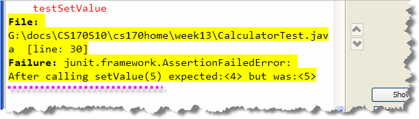
Floating-Point Assertions
For double or floating-point tests, you'll
often have situations that are logically and mathematically
equal, but where your tests still fail.
Here, for instance, is an assertion comparing two values that
are mathematically equal:
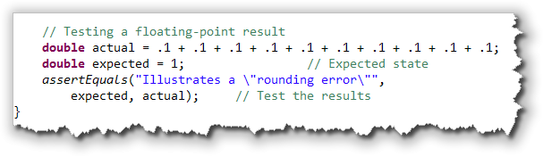
When you use the "regular" version ofassertEquals(),
you'll see that the result fails with the following error message: In these cases, you
can pass another parameter to
In these cases, you
can pass another parameter to assertEquals(),
following the actual value. (If you supply an error message,
then it would be a fourth parameter; if you don't add your
own error message, then it will be the third parameter.)
This extra parameter is a tolerance value that is
used to determine when two values are effectively equal.
You can use 1E-14 as a general-purpose tolerance value,
like this:
 With this change, the test shown here no longer fails.
With this change, the test shown here no longer fails.
Boolean Tests
To test boolean methods or Boolean expressions,
use the assertTrue() and assertFalse()
methods. You can also use these in place of assertEquals()
by creating an expression using relational operators, but if you do,
then the error messages are not very informative. ("Test failed. Too bad."):
 As with the other assertions, the use of a user-supplied error message,
like I've used here, is optional. Although my message here is kind of
silly, if you use the JUnit Boolean assertions, you'll want to make
sure that your error messages let you know exactly what failed, since
you won't be shown the actual and expected values, or the
Boolean expression that was tested and failed.
As with the other assertions, the use of a user-supplied error message,
like I've used here, is optional. Although my message here is kind of
silly, if you use the JUnit Boolean assertions, you'll want to make
sure that your error messages let you know exactly what failed, since
you won't be shown the actual and expected values, or the
Boolean expression that was tested and failed.
Writing a Test Fixture
In the test method that we just wrote,
we first created a
Calculator object set to its default state. In fact, probably
all of your test methods will require this exact line of code.
To simplify your code, you might be tempted to create the
Calculator object as an instance variable and
then initialize it in the test class constructor.
Unfortunately, that won't work, because you want all of your test methods to be completely independent. You don't know (nor should you know) what order the tests you write will be run in, and no single test should be able to affect the outcome of any other test.
If you create the Calculator as an
instance variable, it will be initialized when the class loads,
but it won't be reinitialized for subsequent test methods;
you won't be running with a clean slate. You also can't assume
that test methods will run in any particular order, so you can't create
sequences of tests that take prior method modifications into
account. Basically every test has to be self-contained.
That doesn't mean that you have to write the same duplicate
object creation code in each test method though. The solution is to:
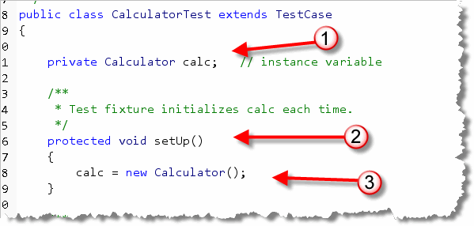
- create an instance variable that contains the object under test
- and then, create a
setUp()method that initializes the instance variable putting it into the "clean slate" state you need before each test runs.
The setUp() method, which is known as a test fixture,
will be run before each test.
Try It Yourself
One you have the test fixture done, why don't you finish up
CalculatorTest by writing test methods for all of the other
methods in Calculator. You can just copy the existing,
working method (that's what I do), and then just change the
name and modify the code.
To write good test cases, though, you'll need to also think about what you should test. Let's look at that briefly before we finish up this chapter.
Selecting Test Cases
Now that you know how to write a test case, let's talk about what kind of test cases you should write. You already know that you should have at least one test case for each method in the class you are testing, but actually, you'll need quite a few more, each one handling a particular kind of input.
- First, you should have some values that represent legitimate values that your program is expected to handle normally. You don't need a lot of these. In a square root program, you'd test some values greater than 0. In a grade calculating program you'd test values for each of the grades: A – F.
- Next, you need to test boundary cases. Boundary cases include those values that are legitimate, but likely to produce incorrect output if there is an error in your code. If you are calculating letter grades from percentages, for example, testing 85% for the "B" grade would be a regular legitimate value. You'd also need to test the boundary conditions 80% and 79% in case you had used the relational operators incorrectly. These would be the boundary conditions.
- Finally, you need to handle some negative cases: input that you expect to fail. You want to make sure that if you supply the wrong kinds of values, that the method doesn't somehow magically produce output.
Regression Testing
Whenever you fix a bug in your code, you want to make sure that the bug doesn't reappear later. Of course, this really applies to code in the "real" world, and not the code that you'll turn in for homework assignments. You don't want a bug that was fixed in Version 1 of your program to magically reappear when you release Version 5, a problem known as cycling.
The best way to prevent this is to add a test to your
TestCase class that specifically tests for that bug. As time goes
on, the TestCase class will get larger and larger as more
bugs are fixed and tests are added.
Then, every time you fix a new bug, you'll run all of the tests you've collected, so your new fix can't reintroduce an old bug. This practice of testing your code against a collection of tests from past bugs is known as regression testing, and it's another reason to keep your test data, and to use automated testing tools like JUnit.
Black-box and White-box
One last type of testing you should know about is the difference between black-box and white-box testing. So far, all of the testing that we've done tests the program's actual behavior against the expected output. That means we're testing against what the program should be doing, or the specification. This is called black-box testing.
The only problem with black-box testing is that it doesn't
ensure that all the internal portions of the code are actually
tested. It's possible that your inputs don't test every single
branch in an if or switch statement.
White-box testing "looks inside" your code and tries to make sure that every portion of your code is actually tested. The most common kind of white box testing is called coverage testing. Coverage testing uses specialized tools that are actually very expensive. One common tool is named Clover.
More Information on Testing
For more information on using JUnit to help you as you develop your programs, you may want to read Arizona State Professor Rick Mercer's CS-1 textbook, Asserting Java with JUnit, which you can get for free from his Web site. He also has a CS2 (Data Structures) textbook available as well, titled Data Structures with Java and JUnit.
For more information on software testing in general, here's a link to Chapter 16 in Jean-Paul Tremblay's 2002 textbook, Data Structures and Software Development in an Object-Oriented Domain. Although a lot of the material in this text is advanced for this course, I think some of you will find it useful to read through the material.

Unit Testing Summary
- Testing is designed to expose errors in your code. Testing does not prove your program is correct and cannot show the absence of bugs. Exhaustive testing is impossible, even for trivial inputs.
- Unit tests are designed to test the expected state of an object, with the actual state after calling the object's methods.
- A test harness creates an object in a known state and then calls the method under test and compares the actual and expected values. In a manual test harness, the values are just printed.
- A unit testing framework provides facilities for creating using tests and automating the comparison of the actual and expected values when the tests are run.
- The most popular unit-testing framework in the Java world is named JUnit. While DrJava will run JUnit-4 tests, its "wizards" support writing JUnit-3 style tests.
- To write a JUnit-3 style test harness for a class, create a
subclass of JUnit's
TestCaseclass and then add individual test methods for each feature you want to test. - In JUnit-3, a test method is a
voidmethod that starts withtestand doesn't take any parameters. Inside the method, you create an instance of the class under test, and then call the mutator method you want to test. - Inside your test method, to compare the actual and expected
state of your object, use the different JUnit
Assertmethods. The most common isassertEquals(). - To add a message when a test fails, you can use the
overloaded versions of the
Assertmethods that take aStringmessage as their first parameter. - To test methods that return a floating-point value, use
the overloaded
assertEquals()methods that take an additionaldouble tolerancevalue. - To test a Boolean condition, use the
assertTrue()andassertFalse()methods. To test for null or not-null objects, use theassertNull()andassertNotNull()methods. - Once you have written a
TestCaseclass, you can run it in DrJava by right-clicking the test class and choosing Test File. You can run all the tests open in the Files Pane, by choosing Test All Documents from the Tools menu. - The object setup code for each test method is often the same.
You can put this code into a method named
setUp()and it will automatically be run as if it were inserted into the first line of each test method. This is called a test fixture. - When selecting test cases you should make sure you have a good selection of legitimate input values. You should also try to test every boundary condition, as well as making sure that invalid input (that is, negative cases) are handled correctly in your code. That means your test cases may need to use exception handling.
- When you fix a bug in your code, you should write a test that specifically fails if the bug appears. As you make changes to your code, you should continue to run these older tests to make sure that the bug is not re-introduced. This is called regression testing.
- Unit tests that compare the expected state to the actual state are known as black box tests. As you write more complex programs, you will also want to "look inside" your code and make sure that every portion of your code is tested. This is done using white box testing techniques known as coverage testing.